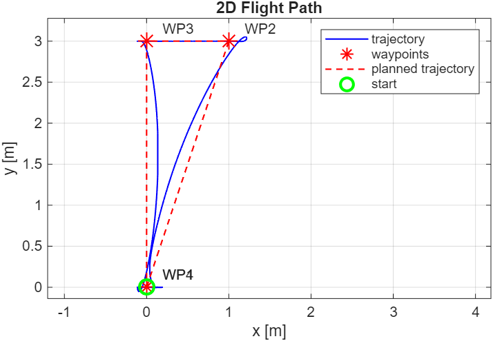
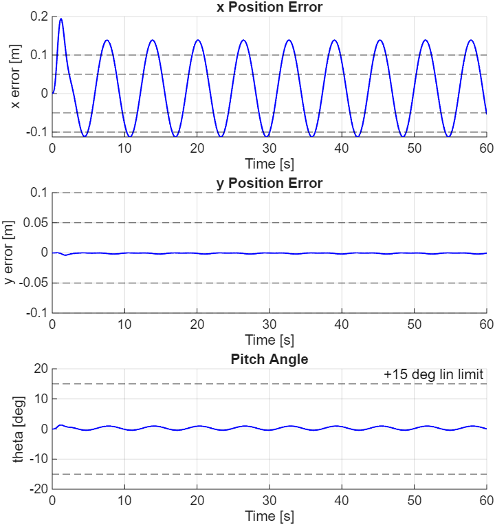

The problem
 A VTOL aircraft is underactuated: it has two thrust inputs but three degrees of freedom
(x, y and pitch). To move sideways it has to tilt, so position and attitude are tightly coupled.
On top of that, only position and pitch could be measured. All three velocities had to be estimated.
A VTOL aircraft is underactuated: it has two thrust inputs but three degrees of freedom
(x, y and pitch). To move sideways it has to tilt, so position and attitude are tightly coupled.
On top of that, only position and pitch could be measured. All three velocities had to be estimated.
The controller was tested against a black-box plant with unknown parameter error, a steady crosswind and Gaussian sensor noise.
Approach
- Linearisation: symbolic Jacobians of the 6-state nonlinear model about hover, then zero-order-hold discretisation at 5 ms (checked against a first-order Euler approximation, max error 4.9×10-4).
- LQR state feedback: Q and R weights set with Bryson's rule from physical limits (1 m position, 0.5 rad pitch, 15 N thrust). Closed-loop time constants of 0.14–0.49 s, with the resulting gain naturally decoupling the vertical and lateral channels.
- Integral action (LQI): open-loop probing showed the crosswind caused unbounded lateral drift, so the state was augmented with position-error integrators, with anti-windup near saturation.
- Kalman filter: a steady-state filter reconstructs the three unmeasured velocities, with observer poles placed faster than the controller's. Combined with LQR via the separation principle.
- Reference generator: cosine-ramp trajectories (zero velocity at each end) with a waypoint mode, avoiding the saturation a step reference would cause.
Results
- Stable hover for 60 s in crosswind: vertical error near zero, lateral error bounded within about ±0.15 m.
- Small attitude excursions: pitch stayed within a few degrees, well inside the ±15° linearisation limit.
- No actuator saturation in hover or during the waypoint mission.
- Fast estimation: the Kalman filter converged on position within 3 s and on velocities within 4 s.



What I learned
The biggest lesson was how much the plant's physics shapes what “good tracking” looks like: an underactuated aircraft can't fly a straight diagonal, so judging the controller meant understanding the dynamics, not just the error plots. Probing the black box before designing (instead of assuming ideal conditions) is what revealed the need for integral action.
Next steps would be a path-planning layer that generates attitude-aware trajectories, automated LQR tuning, and a comparison against nonlinear MPC.